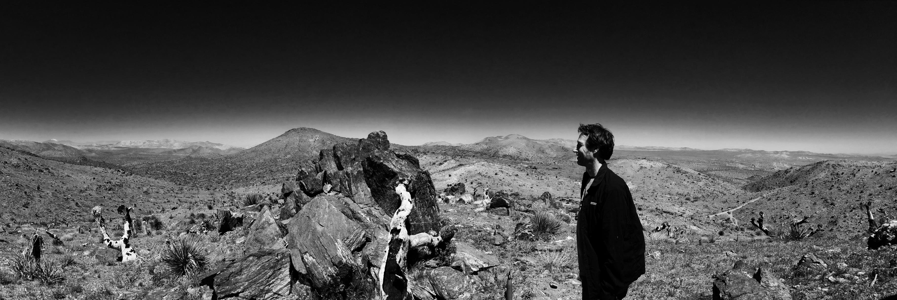

About Me

My name is Joe Hurowitz. I've been a musician and school teacher for many years. I am currently teaching in Washington DC while attending the GW University Web Development Bootcamp.
I hope one day to work for an educational organization or a non-profit who need a coder to help develop some great curriculum for the students of the world.
Here are some of the subjects we covered over the course of 24 weeks:
Javascript,
jQuery,
Node.js,
Html,
CSS,
mySQL,
Sequelize,
express server,
GitHub ,
REACT Framework,
MongoDB, and
ES6.
Lastly I'd like to add that I'm the father of a wonderful 11 year old named Madeleine and I'm a creative musician and leader of a band called "The Mercy Alliance".
Click on the music link above to read more.
Connect with Me